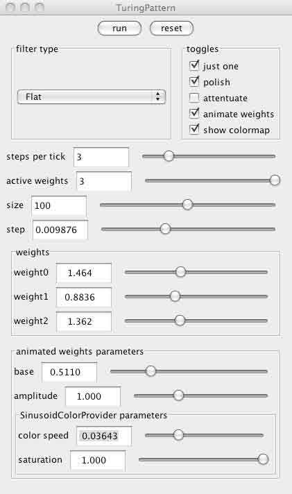

Multi-Scale Turing Patterns with Wallpaper Symmetries
First-time users: See this introduction. to the visualization tools involved.
Mathematical background
This work is based directly on the work of Jonathan McCabe (www.jonathonmccabe.com) presented at Bridges 2010 conference and entitled "Cyclic Symmetric Multi-Scale Turing Patterns". From the abstract to that paper:
In his 1952 paper "The Chemical Basis of Morphogenesis" Alan Turing suggested that a system of chemical substances, reacting together and diffusing through a tissue, would account for the generation of patterns in multicellular organisms.
A single Turing pattern has a characteristic scale, or length. McCabe devised a method to combine several "scales" or "levels" of Turing patterns into a single image, and showed how to introduce cyclic symmetry into the image. My contribution is to extend the idea to include symmetry of a wallpaper group. Two groups have been implemented, the rotation group 244 and the reflection group *2222 (both in the Conway-Thurston orbifold notation). This involves identifying a fundamental domain for the simulation (a polygon in the plane) and then calculating the Turing pattern generation algorithm on this fundamental domain. Since the algorithm depends on neighborhoods (a so-called cellular automata), the trick is to obtain the correct neighborhoods for points (pixels) which lie on the boundary of the fundamental region.
In the interest of efficiency, the scales present in this implementation are constrained to be powers of three. That is, the neighborhoods of a pixel which are sampled are of square size 3, 9, 27, 81, 243, etc.
The algorithm depends on the following parameters:
- number of levels. (how many scales are to be combined) . A value of three for example yields neighborhoods of side 3, 9, and 27.
- weights. For each level, a weight is provided which controls how much the corresponding scale contributes to the pattern. For better or for worse, at the current time this is the inverse of what you might expect. A small weight lowers a threshold, which makes it easier for the corresponding scale to qualify as the "neediest" scale, and hence increases the presence of that scale.
- time step. This is a kind of temperature: higher values result in more motion in the pattern.
- size. This is the resolution of the fundamental domain, in pixels. Note that when the number of levels is set so that the size of neighborhoods is greater than this value, one gets funny feedback, since the neighborhood wraps around the fundamental domain. If the disparity is too great, it can lead to exceptions and termination of the program. So, if you reduce this size, make sure the number of levels is not too large. A bit of wrapping is OK but too much -- you'll find out for yourself!
User interface
There should be a panel visible to the left of the 3D graphics window labeled "TuringPattern". If this is not present, select the menu item "Window->Left slot". The full window should appear as shown below. You can remove the panel using the same menu item. You can also drag the panel out of the window by dragging on the title bar.

The two buttons at the top:
- run/pause. Use this button to activate and deactivate the simulation.
- reset. Clicking this generates a new random pattern and starts the simulation over again (if the first button is active.)
The filter type controls how the neighborhoods are combined together. The choice of flat seems to give best results for reasons unknonwn.
- flat. This averages the values with equal weights
- rounded This averages the values with a "hemispherical" weighting (more in middle, 0 on corners)
- tent The middle is weighted the most, and decreases linearly to the corners
- asymmetric Can't remember. Try it!
There are also a set of toggles:
- just one. When this is selected, the multi-level algorithm described above is implemented. Otherwise, each level is evolved separately from the others.
- polish. This appears to apply a sort of smoothing operator to all filtered values (a kind of post-filter) which is a mix of a tent and a flat filter.
- attenuate. The general tendency for most values in a steady state is to approach 0 or 1 in value. When this is selected, the approach to these extreme values is slowed down (proportional to the difference to them).
- animate weights. There are a set of controls which automatically animate the weights (see below). Select this to activate them.
- show colormap. Remember colormaps? Too bad this one isn't so successful!
The set of sliders controls following parameters:
- steps per tick. This many iterations of the Turing algorithm are carried out between each update of the rendered image.
- active weights, size, and step correspond to the number of levels, size, and time step in the mathematical description above.
Fnally there are some values for animating the weights. The spiffy Sinusoidal color provider gives 3 channels of values v0, v1, and v2, in the range 0-1. Then weight 0 = base + amplitude * v0, etc. Here base and amplitude are the values of the sliders bearing these names. This means only the first three weights are animated.